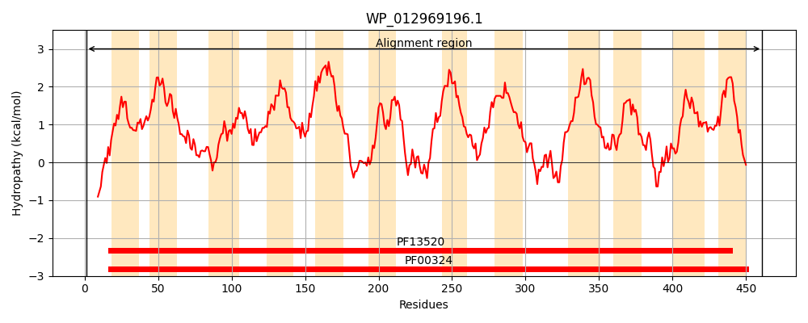
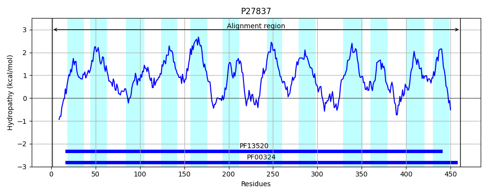
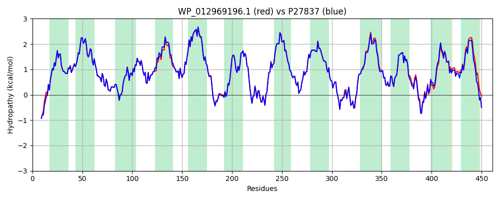

Hit Accession: P27837
Hit TCID: 2.A.3.1.15
Hit Description: gnl|BL_ORD_ID|9630 gnl|TC-DB|P27837|2.A.3.1.15 Probable transport protein YifK OS=Escherichia coli (strain K12) GN=yifK PE=1 SV=4
Mach Len: 461
e:0.000000
Query TMS Count : 12
Hit TMS Count: 12
TMS-Overlap Score: 12.150000
Predicted Substrates:None
BLAST Alignment:
Score: 2205 , Bit scores: 853 bits, E-value: 0.0e+00, Alignment length: 461, Percentage identity: 92
Query: 1 MTEKKAELQRGLEARHIELIALGGTIGVGLFMGAASTLKWAGPSVLLAYIIAGLFVFFIMRSMGEMLFLEPVTGSFAVYAHRYMSPFFGYLTAWSYWFMWMAVGISEITAIGVYVQFWFPEMAQWIPALIAVGLVALANLAAVRLYGEIEFWFAMIKVTTIIVMIVVGLGVIFFGFGNGGHSIGFGNLTEHGGFFAGGWKGFLTALCIVVASYQGVELIGITAGEAKNPQVTLRSAVGKVLWRILIFYVGAIFVIVTIFPWDQIGSNGSPFVLTFAKIGITAAAGIINFVVLTAALSGCNSGMYSCGRMLYALAKNRQLPAAIGKVSRNGVPAVGVALSILILLVGSCLNYIIPNPQRVFVYVYSASVLPGMVPWFVILISQLRFRRVHRAAIASHPFRSLLFPWANYFTMAFLICVLVGMGLNDETRMSLFVGIIFLAAVTLIYKVFGLGRQGQVNNTAE 461
M + K ELQRGLEARHIELIALGGTIGVGLFMGAASTLKWAGPSVLLAYIIAGLFVFFIMRSMGEMLFLEPVTGSFAVYAHRYMSPFFGYLTAWSYWFMWMAVGISEITAIGVYVQFWFPEMAQWIPALIAV LVALANLAAVRLYGEIEFWFAMIKVTTIIVMIV+GLGVIFFGFGNGG SIGF NLTEHGGFFAGGWKGFLTALCIVVASYQGVELIGITAGEAKNPQVTLRSAVGKVLWRILIFYVGAIFVIVTIFPW++IGSNGSPFVLTFAKIGITAAAGIINFVVLTAALSGCNSGMYSCGRMLYALAKNRQLPAA+ KVSR+GVP GVA+SI ILL+GSCLNYIIPNPQRVFVYVYSASVLPGMVPWFVILISQLRFRR H+AAIASHPFRS+LFPWANY TMAFLICVL+GM N++TRMSLFVGIIF+ AVT IYKVFGL R G+ + E
Sbjct: 1 MADNKPELQRGLEARHIELIALGGTIGVGLFMGAASTLKWAGPSVLLAYIIAGLFVFFIMRSMGEMLFLEPVTGSFAVYAHRYMSPFFGYLTAWSYWFMWMAVGISEITAIGVYVQFWFPEMAQWIPALIAVALVALANLAAVRLYGEIEFWFAMIKVTTIIVMIVIGLGVIFFGFGNGGQSIGFSNLTEHGGFFAGGWKGFLTALCIVVASYQGVELIGITAGEAKNPQVTLRSAVGKVLWRILIFYVGAIFVIVTIFPWNEIGSNGSPFVLTFAKIGITAAAGIINFVVLTAALSGCNSGMYSCGRMLYALAKNRQLPAAMAKVSRHGVPVAGVAVSIAILLIGSCLNYIIPNPQRVFVYVYSASVLPGMVPWFVILISQLRFRRAHKAAIASHPFRSILFPWANYVTMAFLICVLIGMYFNEDTRMSLFVGIIFMLAVTAIYKVFGLNRHGKAHKLEE 461 | Protein Hydropathy Plots: |
|---|
|  |  |
Pairwise Alignment-Hydropathy Plot:
|
|---|
|  |